Class 6: Single Cell RNA-seq Analysis
Austin Gillen
2018-12-12
Source:vignettes/class-6.Rmd
class-6.RmdSingle cell RNA-seq analysis in R with Seurat
(Adapted from the Seurat PBMC 3k Tutorial)
- Introduce sparse matrices
- QC considerations for scRNA-seq data sets
- Build a seurat object, cluster cells and and calculate differential gene expression
Single cell RNA-seq analysis in R starts with the same data as bulk RNA-seq: a count matrix
However, for efficiency, scRNA-seq data is stored in sparse matrix objects. An example data set consisting of 2,700 peripheral blood mononuclear cells (PMBCs) is included in the eda package.
# load the path to the example data
pbmc_10x <- system.file("extdata", "pbmc_gene_bc_matrices", "hg19", package = "pbda")
# read the example data
pbmc.data <- Read10X(pbmc_10x)
# print the size of the sparse matrix
object.size(x = pbmc.data) %>%
format(units = "auto")
#> [1] "37.2 Mb"
# print the size of the full matrix
object.size(as.matrix(x = pbmc.data)) %>%
format(units = "auto")
#> [1] "676.7 Mb"Seurat uses a custom object to store counts and data (similar to the SummarizedExperiment & DESeqDataSet)
First, we’ll generate a Seurat object with the raw count data, keeping all genes that are expressed in at least 3 cells and all cells with at least 200 detectable genes.
Filtering and QC for scRNA-seq
scRNA-seq data sets are further filtered to remove cells with too few detectable genes, cells with clear outlier numbers of detectable genes (likely doublets) and cells with high proportions of mitochondrial RNAs (likely dead cells).
# Calculate percent of reads that are mitochondrial
mito.genes <- grep(pattern = "^MT-",
x = rownames(x = pbmc@data),
value = TRUE)
percent.mito <- Matrix::colSums(pbmc@raw.data[mito.genes, ])/Matrix::colSums(pbmc@raw.data)
# Add percent.mite as metadata to Seurat object
pbmc <- AddMetaData(object = pbmc,
metadata = percent.mito,
col.name = "percent.mito")
# Plot number of genes, number of UMIs and percent.mito
VlnPlot(object = pbmc,
features.plot = c("nGene", "nUMI", "percent.mito"),
nCol = 3)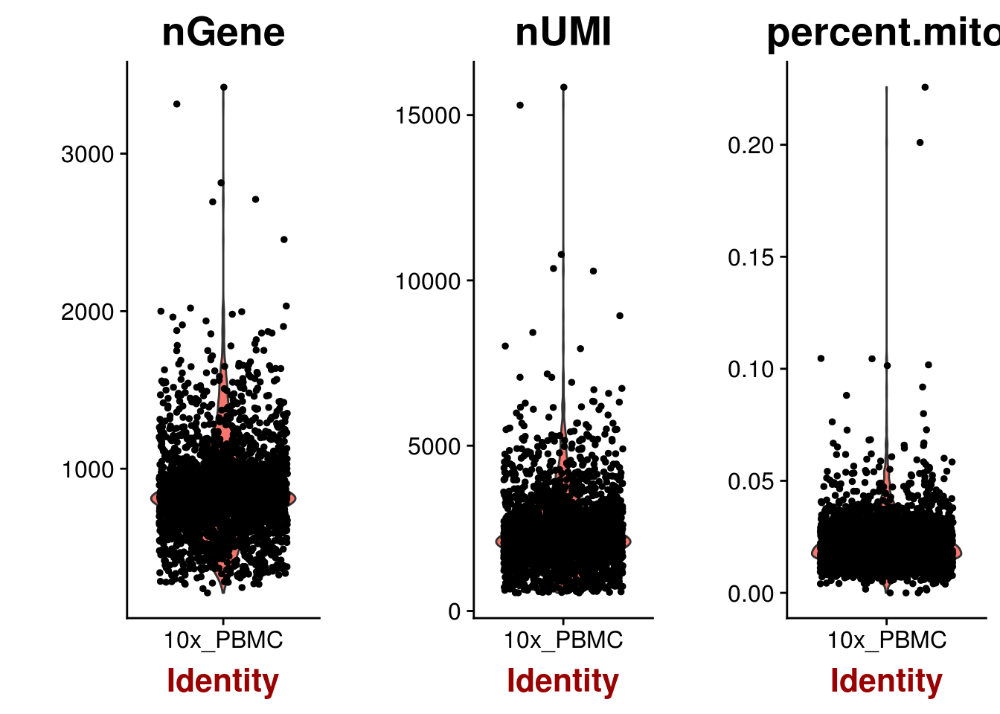
Outliers can be identified visually using the GenePlot function:
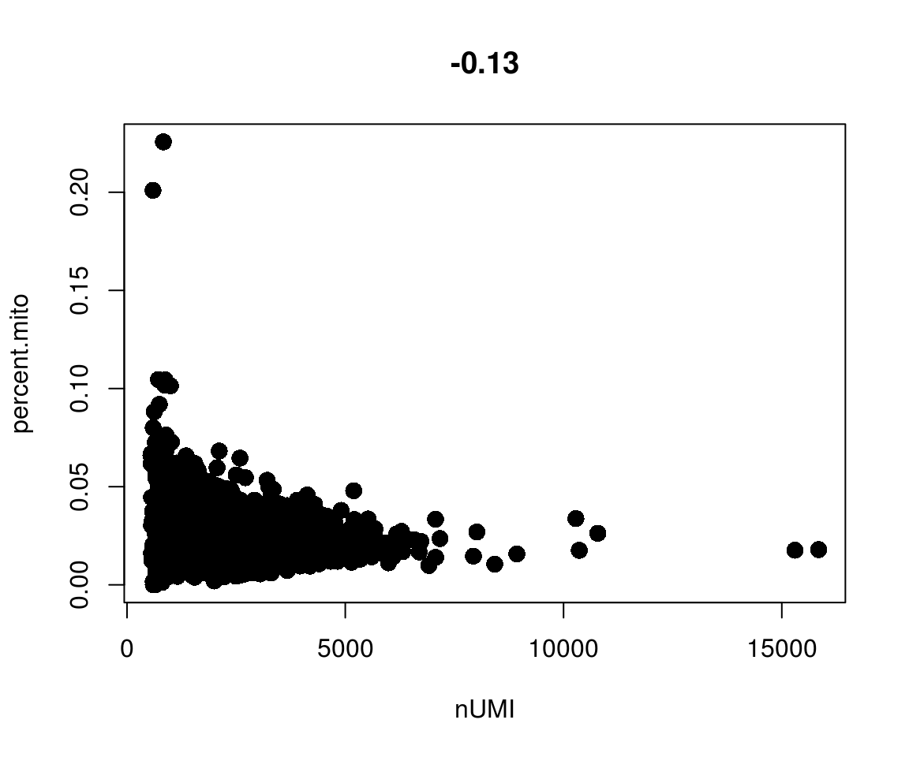
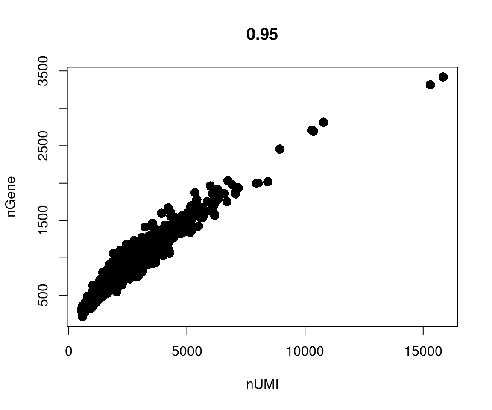
Finally, we can filter the pbmc object with FilterCells:
Normalizing the data, detecting variable genes, and removing uninteresting variation
After filtering, we need to normalize gene expression across cells with the NormalizeData function. This function normalizes gene expression measurements by per-cell total expression, multiplies the result by an arbitrary value (10,000 here) and log transforms the result.
Next, we identify variable genes using a mean-dispersion plot to mark visual outliers.
pbmc <- FindVariableGenes(object = pbmc,
mean.function = ExpMean,
dispersion.function = LogVMR,
x.low.cutoff = 0.0125,
x.high.cutoff = 3,
y.cutoff = 0.5)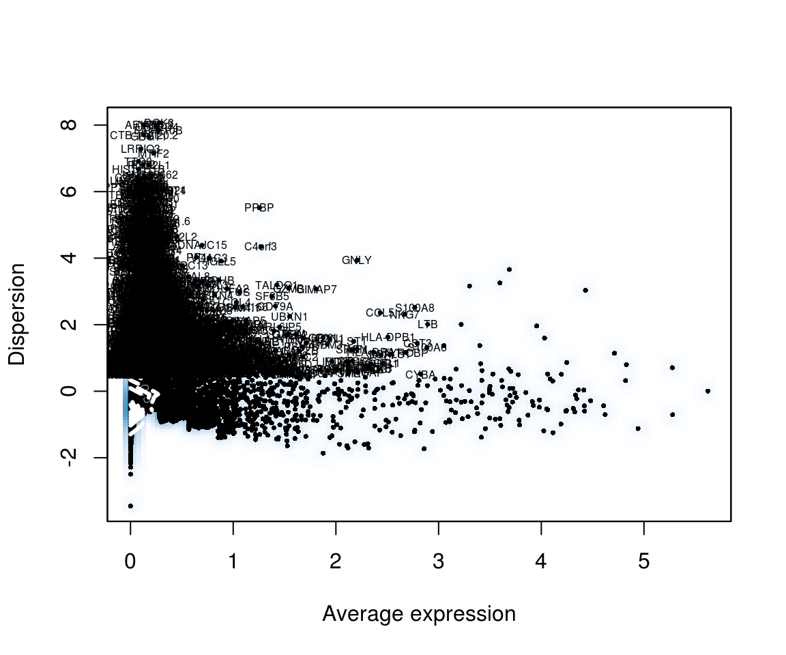
Single cell data sets contain various types of ‘uninteresting’ variation. These can include technical noise, batch effects and confounding biological variation (such as cell cycle stage). We can regress these signals out of the analysis using ScaleData.
Performing dimensionality reduction and clustering: PCA
As in our bulk RNA-seq example, we need a way to project highly multidimensional data onto a 2D plane. PCA alone is insufficient to capture the variation in these data due to the complexity, so we’ll introduce a new method: t-distributed stochastic neighbor embedding (tSNE). A useful interactive tool to help you understand tSNE can be found here. First, we’ll calculate the principle components (used by the clustering and tSNE algorithms):
pbmc <- RunPCA(object = pbmc,
pc.genes = pbmc@var.genes,
do.print = TRUE,
pcs.print = 1:5,
genes.print = 5)
#> [1] "PC1"
#> [1] "CST3" "TYROBP" "FCN1" "LST1" "AIF1"
#> [1] ""
#> [1] "PTPRCAP" "IL32" "LTB" "CD2" "CTSW"
#> [1] ""
#> [1] ""
#> [1] "PC2"
#> [1] "CD79A" "MS4A1" "HLA-DQA1" "TCL1A" "HLA-DQB1"
#> [1] ""
#> [1] "NKG7" "GZMB" "PRF1" "CST7" "GZMA"
#> [1] ""
#> [1] ""
#> [1] "PC3"
#> [1] "CYBA" "HLA-DPA1" "HLA-DPB1" "HLA-DRB1" "CD37"
#> [1] ""
#> [1] "PF4" "PPBP" "SDPR" "SPARC" "GNG11"
#> [1] ""
#> [1] ""
#> [1] "PC4"
#> [1] "CD79A" "HLA-DQA1" "CD79B" "MS4A1" "HLA-DQB1"
#> [1] ""
#> [1] "IL32" "GIMAP7" "AQP3" "FYB" "MAL"
#> [1] ""
#> [1] ""
#> [1] "PC5"
#> [1] "FCGR3A" "CTD-2006K23.1" "IFITM3" "ABI3"
#> [5] "CEBPB"
#> [1] ""
#> [1] "FCER1A" "LGALS2" "MS4A6A" "S100A8" "CLEC10A"
#> [1] ""
#> [1] ""Next, we’ll generate a PCA plot.
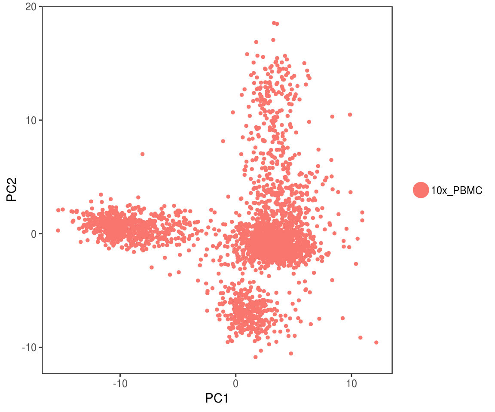
Multiple subpopulations are clearly visible in this plot, but as we’ll see later, there is even more interesting variation present in these data. However, in order to use the clustering and tSNE algorithms, we’ll need to determine how many PCs comprise the ‘true dimensionality’ of the data set. One approach is to view a heatmap of the 500 most extreme cells for each principle component.
PCHeatmap(object = pbmc,
pc.use = 1:12,
cells.use = 500,
do.balanced = TRUE,
label.columns = FALSE,
use.full = FALSE)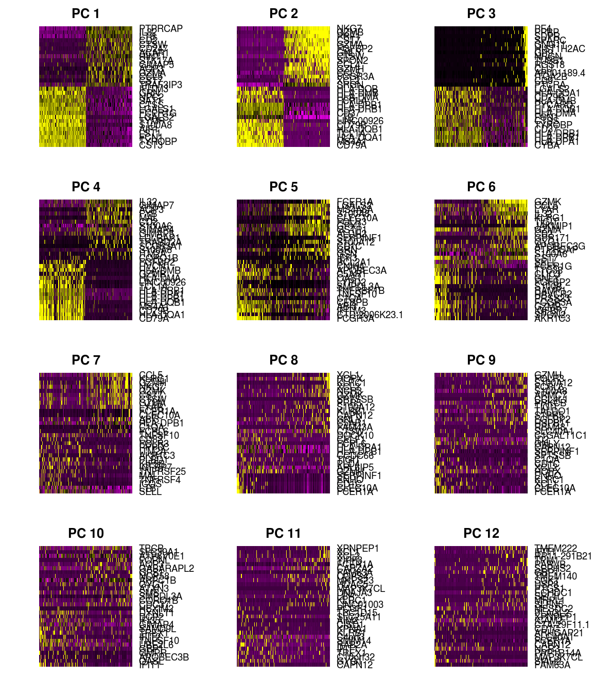
Another approach is the jackstraw plot, which compares the distribution of p-values for each principle component with a uniform distribution. ‘Significant’ PCs show an enrichment of genes with low p-values.
pbmc <- JackStraw(object = pbmc,
num.replicate = 100,
do.print = FALSE)
JackStrawPlot(object = pbmc, PCs = 1:12)
Finally, we can generate an ‘elbow plot’ of the standard deviation of the principle components. The ‘elbow’ indicated the last significant principle component.
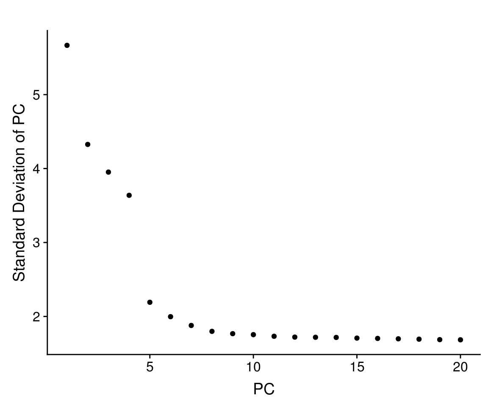
Based on these plots, we conclude that the first 7-10 PCs contain sufficient variation for use downstream.
Performing dimensionality reduction and clustering: Clustering and tSNE
Now that we’ve identified the ‘true dimensionality’ of the data, we can cluster the cells and project them on a tSNE plot.
pbmc <- FindClusters(object = pbmc,
reduction.type = "pca",
dims.use = 1:10,
resolution = 0.6,
print.output = 0,
save.SNN = TRUE)
pbmc <- RunTSNE(object = pbmc,
dims.use = 1:10,
do.fast = TRUE)
TSNEPlot(object = pbmc)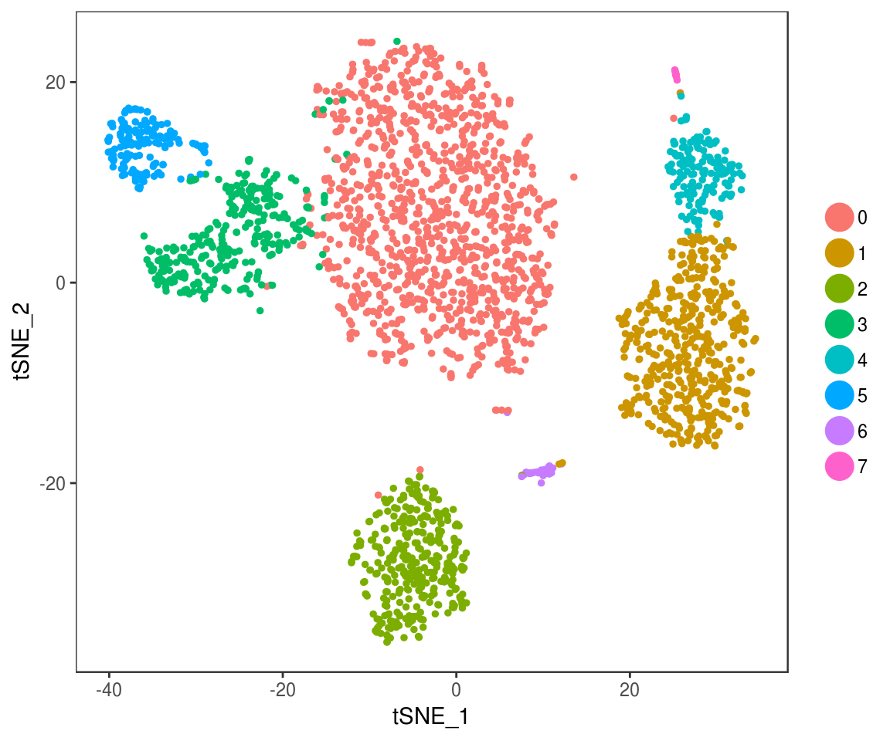
Clustering reveals seven distinct populations that are accurately separated in the tSNE projection - substantially more complexity than was captured in the PCA plot!
Identifying marker genes (differential expression)
Seurat provides the FindAllMarkers and FindMarkers functions for identifying differentially expressed genes in all clusters vs. all other clusters and in specific pairs of clusters, respectively.
pbmc.markers <- FindAllMarkers(object = pbmc,
only.pos = TRUE,
min.pct = 0.25,
thresh.use = 0.25)
pbmc.markers %>%
group_by(cluster) %>%
top_n(2, avg_logFC)Differentially expressed genes can be visualized as violin plots:

Or as ‘feature plots’ on the tSNE projection:
FeaturePlot(object = pbmc,
features.plot = c("MS4A1",
"GNLY",
"CD3E",
"CD14",
"FCER1A",
"FCGR3A",
"LYZ",
"PPBP",
"CD8A"),
cols.use = c("grey", "blue"),
reduction.use = "tsne")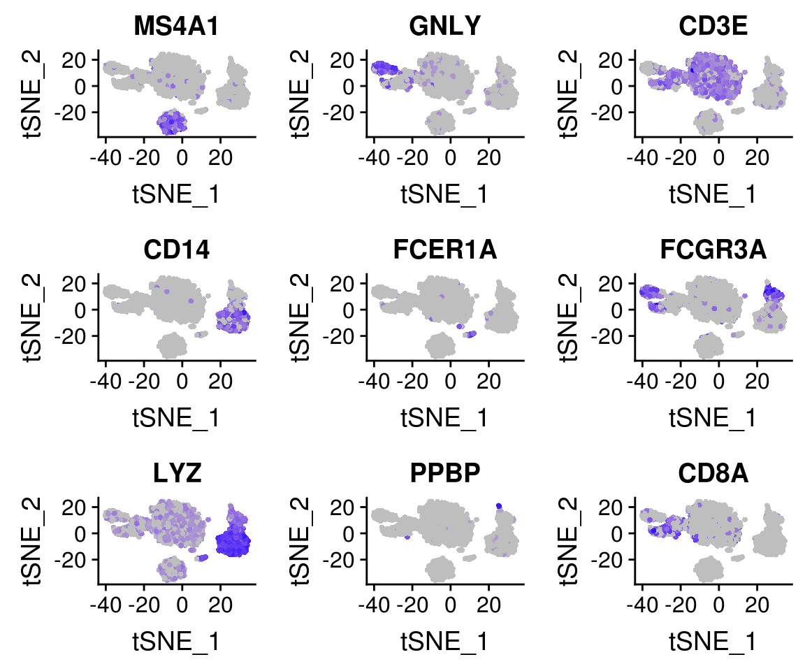
Manipulating Seurat objects: renaming clusters
The marker genes identified above can be used to reclassify clusters as known cell types. This provides a useful example of how metadata is handled in Seurat.
# Create a vector of current cluster IDs
current.cluster.ids <- c(0, 1, 2, 3, 4, 5, 6, 7)
# Create a vector of new cluster IDs (cell types)
new.cluster.ids <- c("CD4 T cells",
"CD14+ Monocytes",
"B cells",
"CD8 T cells",
"FCGR3A+ Monocytes",
"NK cells",
"Dendritic cells",
"Megakaryocytes")
# Save the cluster numbers as "cluster.id"
pbmc <- StashIdent(object = pbmc, save.name = "cluster.id")
# Use plyr to remap the idents from the current IDs to the new IDs
pbmc@ident <- plyr::mapvalues(x = pbmc@ident,
from = current.cluster.ids,
to = new.cluster.ids)
# Plot the tSNE with new cluster IDs
TSNEPlot(object = pbmc,
do.label = TRUE,
pt.size = 0.5)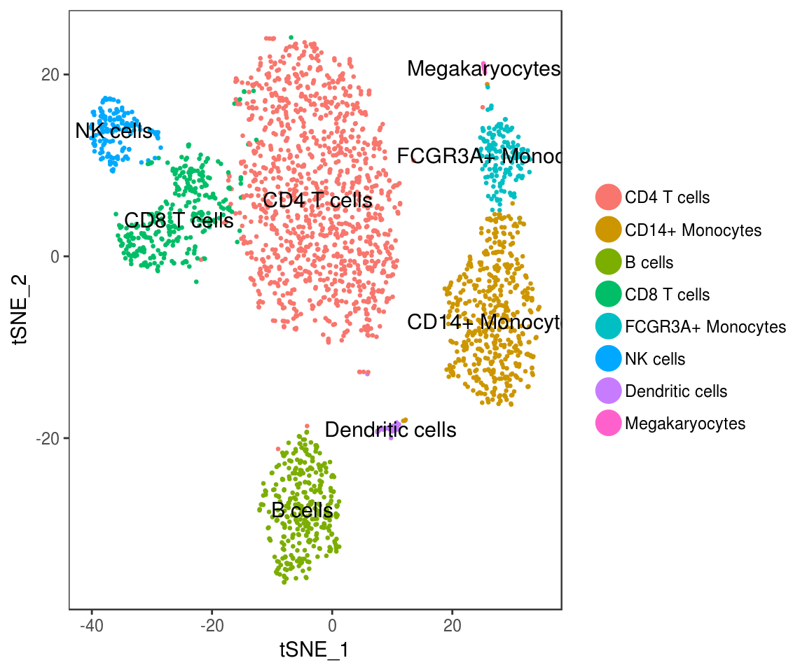
# Plot the tSNE with old cluster IDs
TSNEPlot(object = pbmc,
do.label = TRUE,
pt.size = 0.5,
group.by = "cluster.id")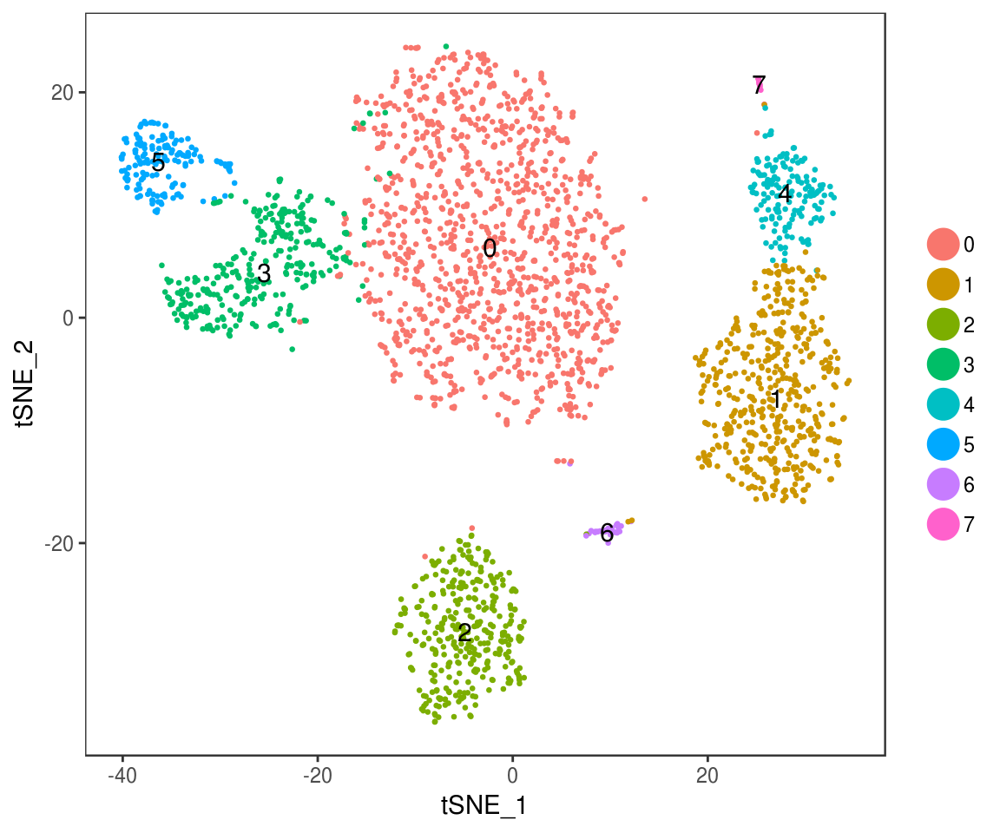
Dealing with proliferating cells
PBMCs are poor examples for this analysis, but the commands are shown here to demonstrate how other, more complex variables are regressed out of these analyses.
# Inspect the classifying genes
cc.genes
# Classify the cells
pbmc <- CellCycleScoring(pbmc,
s.genes = cc.genes$s.genes,
g2m.genes = cc.genes$g2m.genes,
set.ident = TRUE)
# view cell cycle scores and phase assignments
head(x = pbmc@meta.data)# Cell cycle stage can then be regressed out using `Scale Data`
pbmc <- ScaleData(pbmc,
vars.to.regress = c("S.Score", "G2M.Score"),
display.progress = FALSE)
# Alternatively, retain cycling vs. stationary information, but regress out differences in phase
pbmc@meta.data$CC.Difference <- pbmc@meta.data$S.Score - pbmc@meta.data$G2M.Score
pbmc <- ScaleData(pbmc,
vars.to.regress = "CC.Difference",
display.progress = FALSE)